single small flower hair clip layer for a children princess dress-up game, original pastel storybook encyclopedia illustration matching a soft Japanese picture-book fashion encyclopedia, soft watercolor-like coloring, clean fine linework, front view accessory only, no head, no hair, no face, no body, no mannequin, no shadow, pure white 1024 by 1536 canvas, tiny pale yellow and pink flower clip with small leaves, compact and lightweight, suitable for placing on the right side of a front-facing paper doll bob haircut, no tiara, no crown, no earrings, no necklace, no text, no watermark
necklace
Necklace: pearl catalog fit
ok
BaseCutout
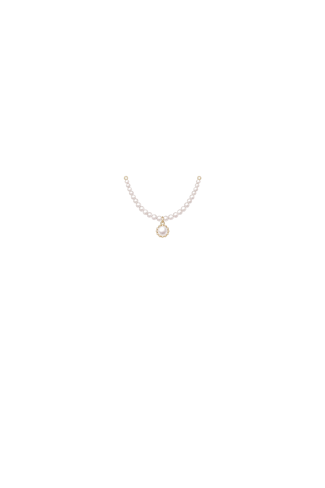
NormalizedComposite
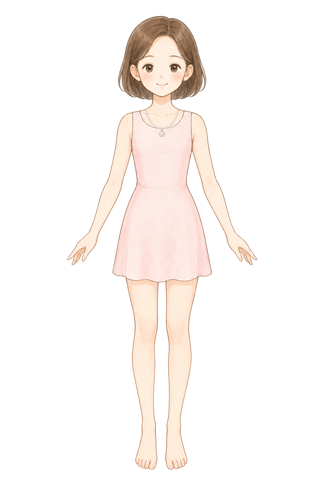
single small delicate princess necklace layer for a children dress-up game, original pastel storybook encyclopedia illustration matching a soft Japanese picture-book fashion encyclopedia, soft watercolor-like coloring, clean fine linework, front view, draw only the necklace and no body, no neck, no skin, no dress, no mannequin, no shadow, pure white 1024 by 1536 canvas, very narrow symmetrical shallow U-shaped tiny pearl chain with one small round pearl charm, pendant exactly on the body center line at canvas x 504 y 424, left chain start near canvas x 452 y 340 and right chain start near canvas x 556 y 340, total visible necklace width between 100 and 125 pixels, small enough to sit on the inner shoulder and collarbone line, do not extend to shoulder straps, do not make a wide shoulder-draped necklace, no earrings, no tiara, no text, no watermark
clothing top
Top: sailor collar catalog fit
ok
BaseCutout
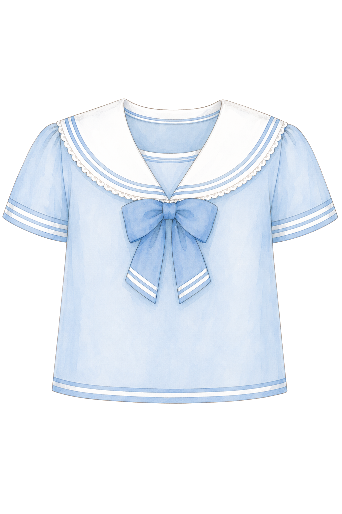
Normalized
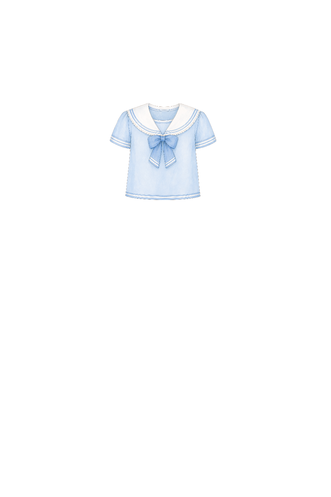
Composite
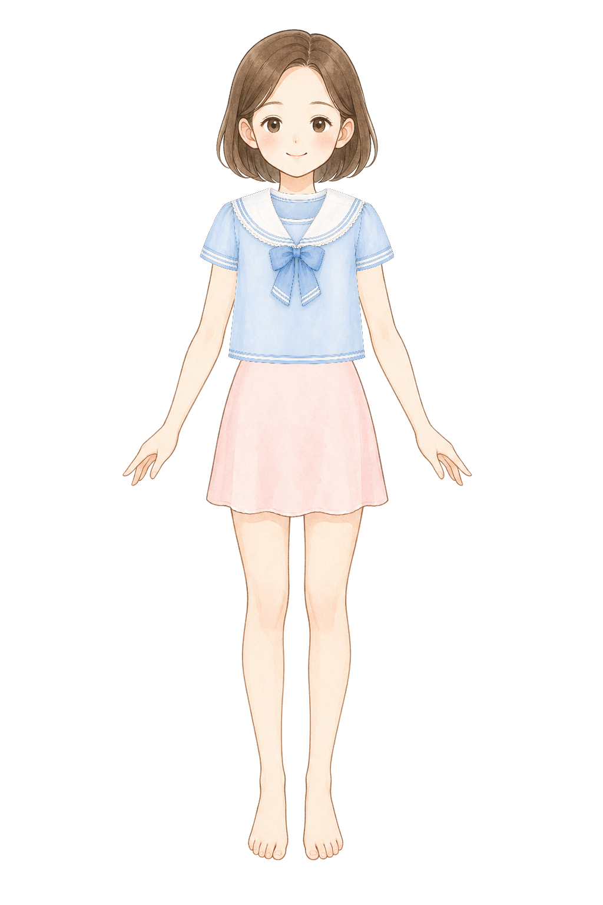
single modest top clothing layer for a children princess dress-up game, original pastel storybook encyclopedia illustration matching a soft Japanese picture-book fashion encyclopedia, soft watercolor-like coloring, clean fine linework, front view top only, no head, no face, no neck, no arms, no hands, no legs, no body, no mannequin, no shadow, pure white 1024 by 1536 canvas, pastel blue and white sailor collar blouse with short sleeves, modest round neckline, simple hem at waist, opaque solid fabric, not sheer, no transparent fabric, wide enough to cover both shoulders and the full torso of a front-facing paper doll, short sleeves reach the shoulder edges, body panel is broad and tall enough to cover the base dress bodice, no skirt, no pants, no jewelry, no text, no watermark
clothing top
Top: puff sleeve catalog fit
ok
BaseCutout
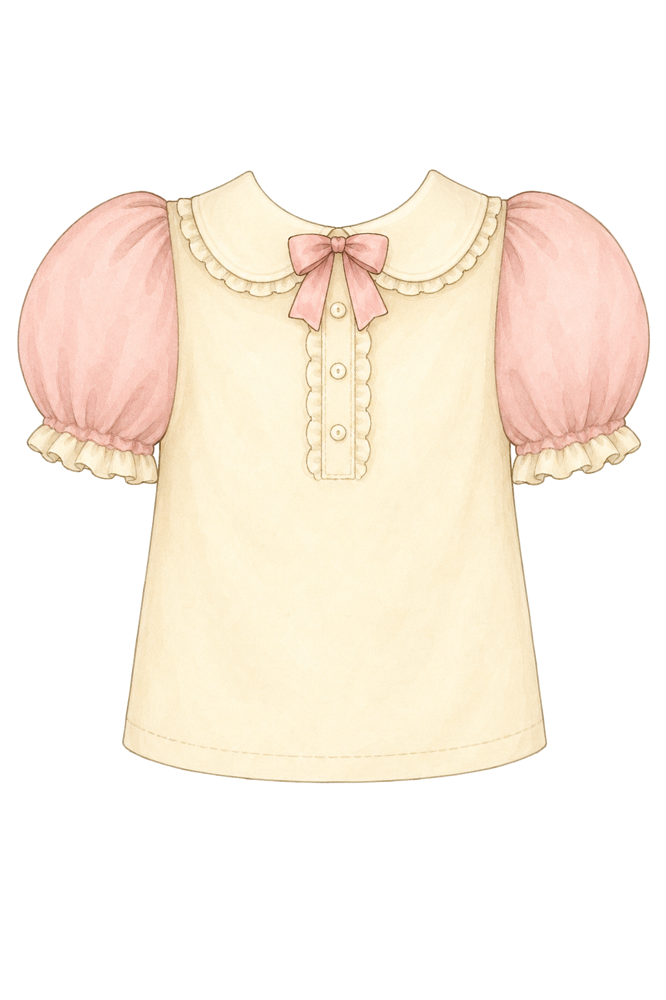
Normalized
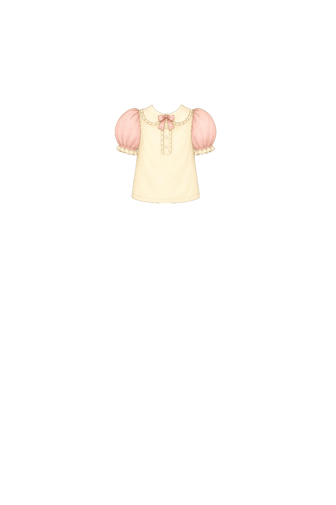
Composite
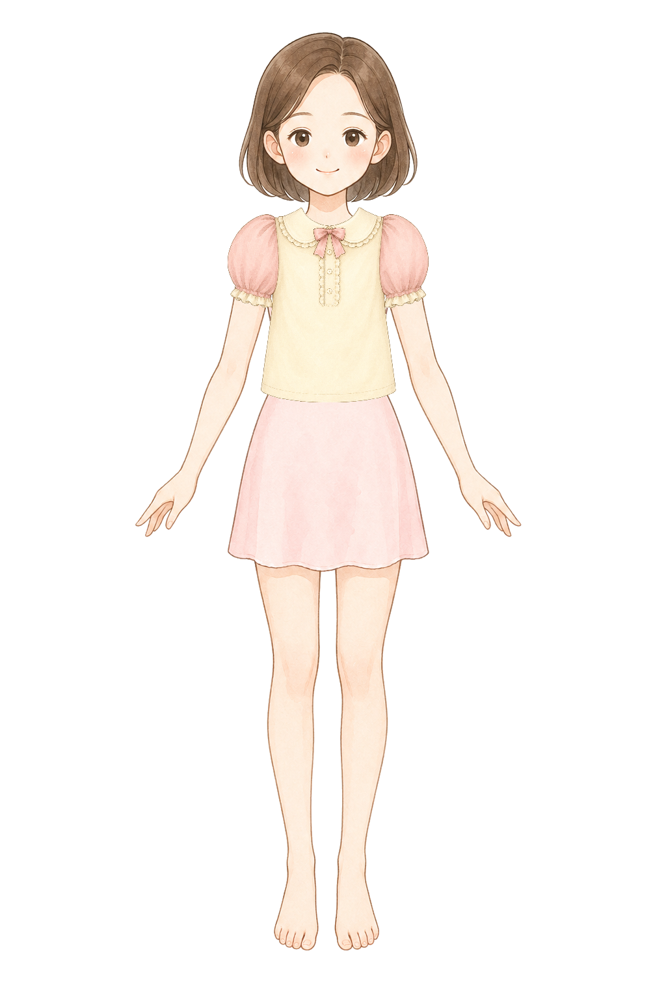
single modest top clothing layer for a children princess dress-up game, original pastel storybook encyclopedia illustration matching a soft Japanese picture-book fashion encyclopedia, soft watercolor-like coloring, clean fine linework, front view top only, no head, no face, no neck, no arms, no hands, no legs, no body, no mannequin, no shadow, pure white 1024 by 1536 canvas, warm cream blouse with small pink puff sleeves and a tiny bow at the collar, modest neckline, simple hem at waist, opaque solid fabric, not sheer, no transparent fabric, wide enough to cover both shoulders and the full torso of a front-facing paper doll, puff sleeves reach the shoulder edges, body panel is broad and tall enough to cover the base dress bodice, no skirt, no pants, no jewelry, no text, no watermark
clothing bottomLong
Bottom: ribbon skirt catalog fit
ok
BaseCutout
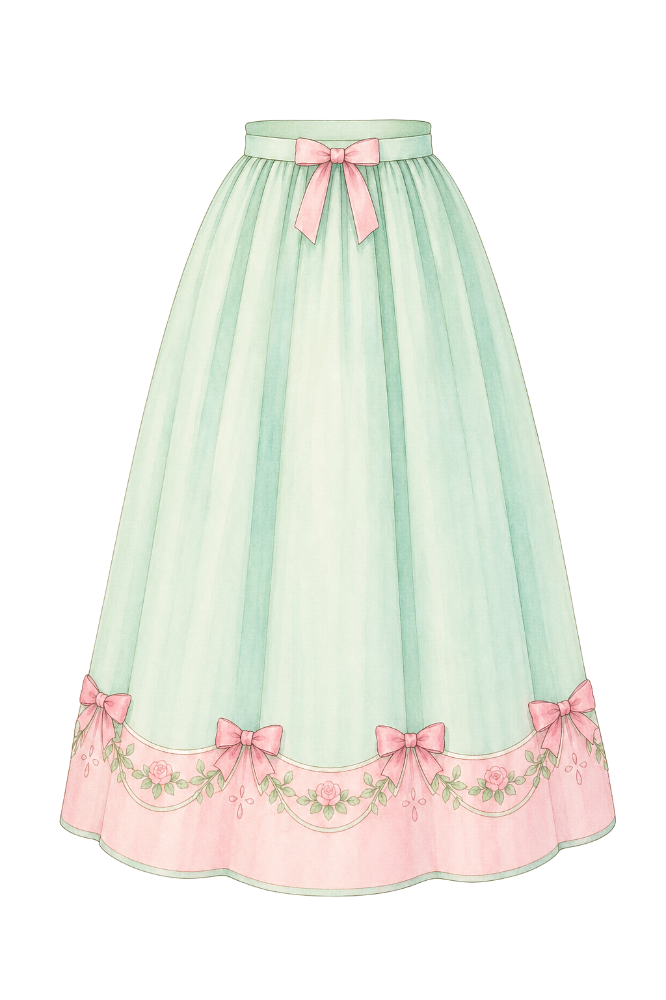
Normalized
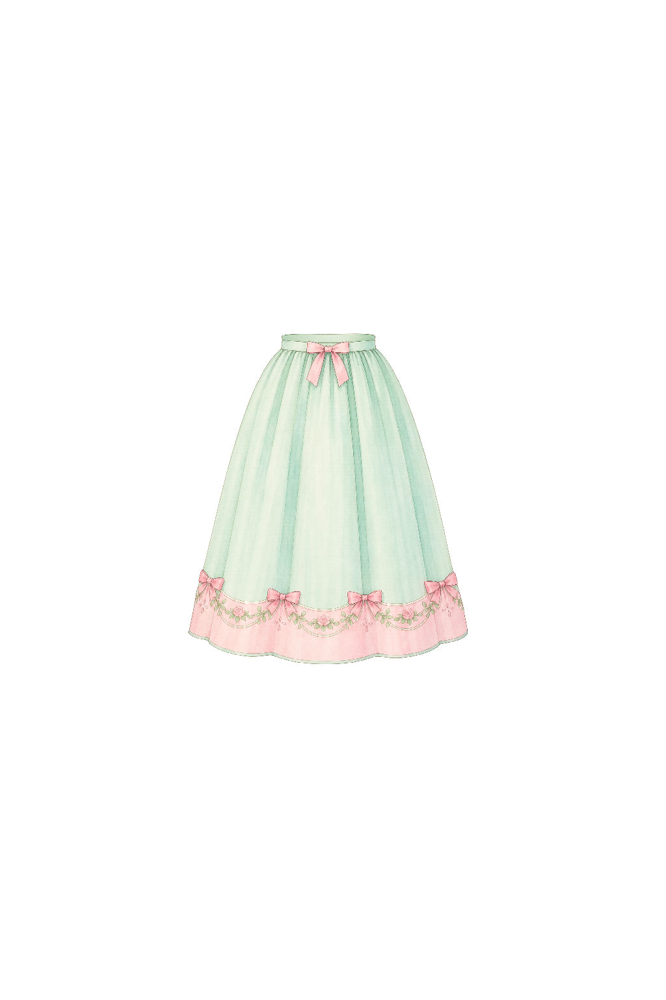
Composite
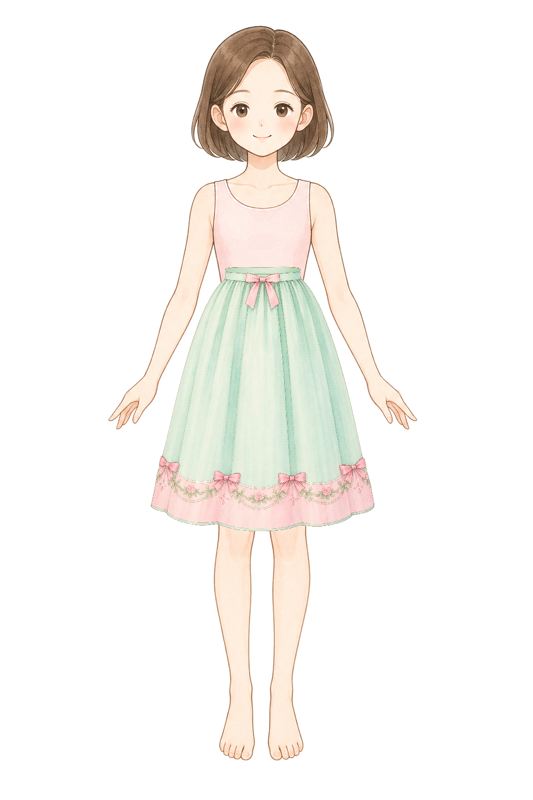
single long bottom skirt layer for a children princess dress-up game, original pastel storybook encyclopedia illustration matching a soft Japanese picture-book fashion encyclopedia, soft watercolor-like coloring, clean fine linework, front view skirt only, no torso, no body, no legs, no feet, no mannequin, no shadow, pure white 1024 by 1536 canvas, a modest mint green and pale pink skirt from waist to just below the knees, opaque fabric, not sheer, no transparent tulle, no see-through lace, simple waistband with one small ribbon, gentle vertical folds, vertical silhouette, taller than wide, not a short tutu, centered and symmetrical, designed to overlay a front-facing paper doll waist and cover the base dress hem completely, no blouse, no shoes, no text, no watermark
boots
Boots: lavender flat cuff catalog fit
ok
BaseCutout
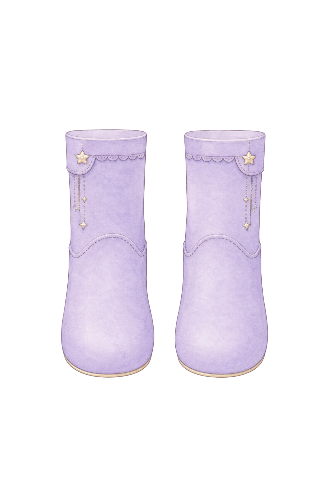
Left opaque normalizedRight opaque normalizedComposite
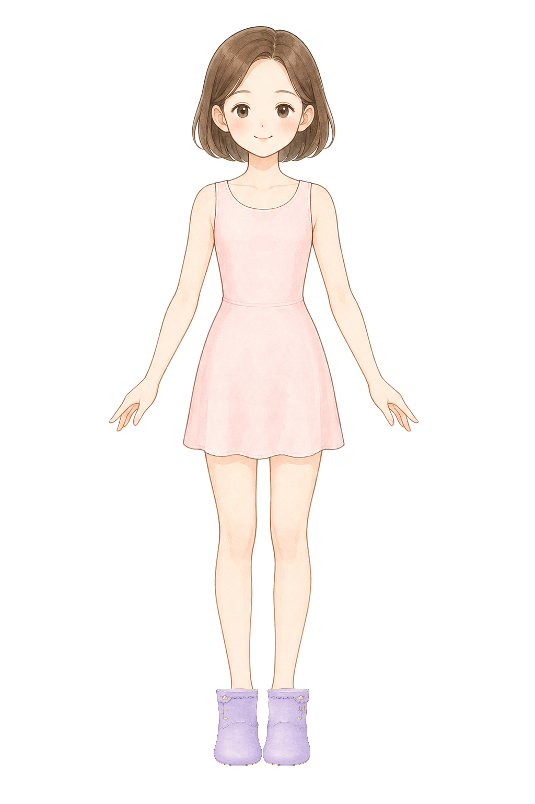
pair of slim short ankle boots only for a children princess dress-up game, original pastel storybook encyclopedia illustration matching a soft Japanese picture-book fashion encyclopedia, soft watercolor-like coloring, clean fine linework, front view boots only, no legs, no feet, no socks, no skin, no body, no mannequin, no shadow, pure white 1024 by 1536 canvas, soft lavender ankle boots with tiny star button details kept subtle, rounded toes that cover the full toes, narrow ankle width, left boot and right boot are the same size and separated as a matched pair, the top of each boot has a flat nearly horizontal cuff edge like a simple cut-off tube, solid boot surface up to the cuff, no visible boot interior, no oval opening, no hole at the top, no dark inside rim, no deep 3D mouth, not oversized, no toe lines, no foot outlines, no skin-colored details, no text, no watermark